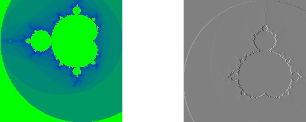

Tutorial: Image Gradient
This comprehensive (and long) tutorial will walk you through an example of using GIL to compute the image gradients.
We will start with some very simple and non-generic code and make it more generic as we go along. Let us start with a horizontal gradient and use the simplest possible approximation to a gradient - central difference.
The gradient at pixel x can be approximated with the half-difference of its two neighboring pixels:
D[x] = (I[x-1] - I[x+1]) / 2For simplicity, we will also ignore the boundary cases - the pixels along the edges of the image for which one of the neighbors is not defined. The focus of this document is how to use GIL, not how to create a good gradient generation algorithm.
Interface and Glue Code
Let us first start with 8-bit unsigned grayscale image as the input and 8-bit signed grayscale image as the output.
Here is how the interface to our algorithm looks like:
#include <boost/gil.hpp>
using namespace boost::gil;
void x_gradient(gray8c_view_t const& src, gray8s_view_t const& dst)
{
assert(src.dimensions() == dst.dimensions());
... // compute the gradient
}gray8c_view_t is the type of the source image view - an 8-bit grayscale
view, whose pixels are read-only (denoted by the "c").
The output is a grayscale view with an 8-bit signed (denoted by the "s") integer channel type. See Appendix 1 for the complete convention GIL uses to name concrete types.
GIL makes a distinction between an image and an image view. A GIL image view is a shallow, lightweight view of a rectangular grid of pixels. It provides access to the pixels but does not own the pixels. Copy-constructing a view does not deep-copy the pixels. Image views do not propagate their constness to the pixels and should always be taken by a const reference. Whether a view is mutable or read-only (immutable) is a property of the view type.
A GIL image, on the other hand, is a view with associated ownership.
It is a container of pixels; its constructor/destructor allocates/deallocates
the pixels, its copy-constructor performs deep-copy of the pixels and its
operator== performs deep-compare of the pixels. Images also propagate
their constness to their pixels - a constant reference to an image will not
allow for modifying its pixels.
Most GIL algorithms operate on image views; images are rarely
needed. GIL’s design is very similar to that of the STL. The STL
equivalent of GIL’s image is a container, like std::vector,
whereas GIL’s image view corresponds to STL range, which is often
represented with a pair of iterators. STL algorithms operate on
ranges, just like GIL algorithms operate on image views.
GIL’s image views can be constructed from raw data - the dimensions, the number of bytes per row and the pixels, which for chunky views are represented with one pointer. Here is how to provide the glue between your code and GIL:
void ComputeXGradientGray8(
unsigned char const* src_pixels, std::ptrdiff_t src_row_bytes,
int w, int h,
signed char* dst_pixels, std::ptrdiff_t dst_row_bytes)
{
gray8c_view_t src = interleaved_view(w, h, reinterpret_cast<gray8_pixel_t const*>(src_pixels), src_row_bytes);
gray8s_view_t dst = interleaved_view(w, h, reinterpret_cast<gray8s_pixel_t*>(dst_pixels), dst_row_bytes);
x_gradient(src, dst);
}This glue code is very fast and views are lightweight - in the above example the views have a size of 16 bytes. They consist of a pointer to the top left pixel and three integers - the width, height, and number of bytes per row.
First Implementation
Focusing on simplicity at the expense of speed, we can compute the horizontal gradient like this:
void x_gradient(gray8c_view_t const& src, gray8s_view_t const& dst)
{
for (int y = 0; y < src.height(); ++y)
for (int x = 1; x < src.width() - 1; ++x)
dst(x, y) = (src(x-1, y) - src(x+1, y)) / 2;
}We use image view’s operator(x,y) to get a reference to the pixel at a
given location and we set it to the half-difference of its left and right
neighbors. operator() returns a reference to a grayscale pixel.
A grayscale pixel is convertible to its channel type (unsigned char for
src) and it can be copy-constructed from a channel.
(This is only true for grayscale pixels.)
While the above code is easy to read, it is not very fast, because the binary
operator() computes the location of the pixel in a 2D grid, which involves
addition and multiplication. Here is a faster version of the above:
void x_gradient(gray8c_view_t const& src, gray8s_view_t const& dst)
{
for (int y = 0; y < src.height(); ++y)
{
gray8c_view_t::x_iterator src_it = src.row_begin(y);
gray8s_view_t::x_iterator dst_it = dst.row_begin(y);
for (int x = 1; x < src.width() - 1; ++x)
dst_it[x] = (src_it[x-1] - src_it[x+1]) / 2;
}
}We use pixel iterators initialized at the beginning of each row. GIL’s
iterators are Random Access Traversal iterators. If you are not
familiar with random access iterators, think of them as if they were
pointers. In fact, in the above example the two iterator types are raw
C pointers and their operator[] is a fast pointer indexing
operator.
The code to compute gradient in the vertical direction is very similar:
void y_gradient(gray8c_view_t const& src, gray8s_view_t const& dst)
{
for (int x = 0; x < src.width(); ++x)
{
gray8c_view_t::y_iterator src_it = src.col_begin(x);
gray8s_view_t::y_iterator dst_it = dst.col_begin(x);
for (int y = 1; y < src.height() - 1; ++y)
dst_it[y] = (src_it[y-1] - src_it[y+1]) / 2;
}
}Instead of looping over the rows, we loop over each column and create a
y_iterator, an iterator moving vertically. In this case a simple pointer
cannot be used because the distance between two adjacent pixels equals the
number of bytes in each row of the image. GIL uses here a special step
iterator class whose size is twice the size of the iterator in horizontal
direction - it contains a raw C pointer and a step. Its operator[] multiplies
the index by its step.
The above version of y_gradient, however, is much slower (easily an order
of magnitude slower) than x_gradient because of the memory access pattern;
traversing an image vertically results in lots of cache misses. A much more
efficient and cache-friendly version will iterate over the columns in the inner
loop:
void y_gradient(gray8c_view_t const& src, gray8s_view_t const& dst)
{
for (int y = 1; y < src.height() - 1; ++y)
{
gray8c_view_t::x_iterator src1_it = src.row_begin(y-1);
gray8c_view_t::x_iterator src2_it = src.row_begin(y+1);
gray8s_view_t::x_iterator dst_it = dst.row_begin(y);
for (int x = 0; x < src.width(); ++x)
{
*dst_it = ((*src1_it) - (*src2_it)) / 2;
++dst_it;
++src1_it;
++src2_it;
}
}
}This sample code also shows an alternative way of using pixel iterators -
instead of operator[] one could use increments and dereferences.
Using Locators
Unfortunately this cache-friendly version requires the extra hassle of maintaining two separate iterators in the source view. For every pixel, we want to access its neighbors above and below it. Such relative access can be done with GIL locators:
void y_gradient(gray8c_view_t const& src, gray8s_view_t const& dst)
{
gray8c_view_t::xy_locator src_loc = src.xy_at(0,1);
for (int y = 1; y < src.height() - 1; ++y)
{
gray8s_view_t::x_iterator dst_it = dst.row_begin(y);
for (int x = 0; x < src.width(); ++x)
{
*dst_it = (src_loc(0,-1) - src_loc(0,1)) / 2;
++dst_it;
++src_loc.x(); // each dimension can be advanced separately
}
src_loc += point_t(-src.width(), 1); // carriage return
}
}The first line creates a locator pointing to the first pixel of the
second row of the source view. A GIL pixel locator is very similar to
an iterator, except that it can move both horizontally and
vertically. src_loc.x() and src_loc.y() return references to a
horizontal and a vertical iterator respectively, which can be used to
move the locator along the desired dimension, as shown
above. Additionally, the locator can be advanced in both dimensions
simultaneously using its operator+= and operator-=. Similar to
image views, locators provide binary operator() which returns a
reference to a pixel with a relative offset to the current locator
position. For example, src_loc(0,1) returns a reference to the
neighbor below the current pixel. Locators are very lightweight
objects - they consist of a raw pointer to the current pixel and an int indicating
the number of bytes from one row to the next (which is the step when
moving vertically). The call to ++src_loc.x() corresponds to a
single C pointer increment. However, the example above performs more
computations than necessary. The code src_loc(0,1) has to compute
the offset of the pixel in two dimensions, which is slow. Notice
though that the offset of the two neighbors is the same, regardless of
the pixel location. To improve the performance, GIL can cache and
reuse this offset:
void y_gradient(gray8c_view_t const& src, gray8s_view_t const& dst)
{
gray8c_view_t::xy_locator src_loc = src.xy_at(0,1);
gray8c_view_t::xy_locator::cached_location_t above = src_loc.cache_location(0,-1);
gray8c_view_t::xy_locator::cached_location_t below = src_loc.cache_location(0, 1);
for (int y = 1; y < src.height() - 1; ++y)
{
gray8s_view_t::x_iterator dst_it = dst.row_begin(y);
for (int x = 0; x < src.width(); ++x)
{
*dst_it = (src_loc[above] - src_loc[below]) / 2;
++dst_it;
++src_loc.x();
}
src_loc += point_t(-src.width(), 1);
}
}In this example src_loc[above] corresponds to a fast pointer indexing
operation and the code is efficient.
Creating a Generic Version of GIL Algorithms
Let us make our x_gradient more generic. It should work with any image
views, as long as they have the same number of channels. The gradient
operation is to be computed for each channel independently.
Here is how the new interface looks like:
template <typename SrcView, typename DstView>
void x_gradient(SrcView const& src, DstView const& dst)
{
gil_function_requires<ImageViewConcept<SrcView>>();
gil_function_requires<MutableImageViewConcept<DstView>>();
gil_function_requires
<
ColorSpacesCompatibleConcept
<
typename color_space_type<SrcView>::type,
typename color_space_type<DstView>::type
>
>();
... // compute the gradient
}The new algorithm now takes the types of the input and output image
views as template parameters. That allows using both built-in GIL
image views, as well as any user-defined image view classes. The
first three lines are optional; they use boost::concept_check to
ensure that the two arguments are valid GIL image views, that the
second one is mutable and that their color spaces are compatible
(i.e. have the same set of channels).
GIL does not require using its own built-in constructs. You are free to use your own channels, color spaces, iterators, locators, views and images. However, to work with the rest of GIL they have to satisfy a set of requirements; in other words, they have to \emph model the corresponding GIL concept. GIL’s concepts are defined in the user guide.
One of the biggest drawbacks of using templates and generic
programming in C++ is that compile errors can be very difficult to
comprehend. This is a side-effect of the lack of early type
checking - a generic argument may not satisfy the requirements of a
function, but the incompatibility may be triggered deep into a nested
call, in code unfamiliar and hardly related to the problem. GIL uses
boost::concept_check to mitigate this problem. The above three
lines of code check whether the template parameters are valid models
of their corresponding concepts. If a model is incorrect, the compile
error will be inside gil_function_requires, which is much closer
to the problem and easier to track. Furthermore, such checks get
compiled out and have zero performance overhead. The disadvantage of
using concept checks is the sometimes severe impact they have on
compile time. This is why GIL performs concept checks only in debug
mode, and only if BOOST_GIL_USE_CONCEPT_CHECK is defined (off by
default).
The body of the generic function is very similar to that of the concrete one. The biggest difference is that we need to loop over the channels of the pixel and compute the gradient for each channel:
template <typename SrcView, typename DstView>
void x_gradient(SrcView const& src, DstView const& dst)
{
for (int y = 0; y < src.height(); ++y)
{
typename SrcView::x_iterator src_it = src.row_begin(y);
typename DstView::x_iterator dst_it = dst.row_begin(y);
for (int x = 1; x < src.width() - 1; ++x)
for (std::size_t c = 0; c < num_channels<SrcView>::value; ++c)
dst_it[x][c] = (src_it[x-1][c]- src_it[x+1][c]) / 2;
}
}Having an explicit loop for each channel could be a performance problem. GIL allows us to abstract out such per-channel operations:
template <typename Out>
struct halfdiff_cast_channels
{
template <typename T>
auto operator()(T const& in1, T const& in2) const -> Out
{
return Out((in1 - in2) / 2);
}
};
template <typename SrcView, typename DstView>
void x_gradient(SrcView const& src, DstView const& dst)
{
using dst_channel_t = typename channel_type<DstView>::type;
for (int y = 0; y < src.height(); ++y)
{
typename SrcView::x_iterator src_it = src.row_begin(y);
typename DstView::x_iterator dst_it = dst.row_begin(y);
for (int x = 1; x < src.width() - 1; ++x)
{
static_transform(src_it[x-1], src_it[x+1], dst_it[x],
halfdiff_cast_channels<dst_channel_t>());
}
}
}The static_transform is an example of a channel-level GIL algorithm.
Other such algorithms are static_generate, static_fill and
static_for_each. They are the channel-level equivalents of STL
generate, transform, fill and for_each respectively.
GIL channel algorithms use static recursion to unroll the loops; they never
loop over the channels explicitly.
Note that sometimes modern compilers already unroll channel-level loops such as the one above. However, another advantage of using GIL’s channel-level algorithms is that they pair the channels semantically, not based on their order in memory. For example, the above example will properly match an RGB source with a BGR destination.
Here is how we can use our generic version with images of different types:
// Calling with 16-bit grayscale data
void XGradientGray16_Gray32(
unsigned short const* src_pixels, std::ptrdiff_t src_row_bytes,
int w, int h,
signed int* dst_pixels, std::ptrdiff_t dst_row_bytes)
{
gray16c_view_t src = interleaved_view(w, h, reinterpret_cast<gray16_pixel_t const*>(src_pixels), src_row_bytes);
gray32s_view_t dst = interleaved_view(w, h, reinterpret_cast<gray32s_pixel_t*>(dst_pixels), dst_row_bytes);
x_gradient(src,dst);
}
// Calling with 8-bit RGB data into 16-bit BGR
void XGradientRGB8_BGR16(
unsigned char const* src_pixels, std::ptrdiff_t src_row_bytes,
int w, int h,
signed short* dst_pixels, std::ptrdiff_t dst_row_bytes)
{
rgb8c_view_t src = interleaved_view(w, h, reinterpret_cast<rgb8_pixel_t const*>(src_pixels), src_row_bytes);
bgr16s_view_t dst = interleaved_view(w, h, reinterpret_cast<bgr16s_pixel_t*>(dst_pixels), dst_row_bytes);
x_gradient(src, dst);
}
// Either or both the source and the destination could be planar - the gradient code does not change
void XGradientPlanarRGB8_RGB32(
unsigned short const* src_r, unsigned short const* src_g, unsigned short const* src_b,
std::ptrdiff_t src_row_bytes, int w, int h,
signed int* dst_pixels, std::ptrdiff_t dst_row_bytes)
{
rgb16c_planar_view_t src = planar_rgb_view (w, h, src_r, src_g, src_b, src_row_bytes);
rgb32s_view_t dst = interleaved_view(w, h, reinterpret_cast<rgb32s_pixel_t*>(dst_pixels), dst_row_bytes);
x_gradient(src,dst);
}As these examples illustrate, both the source and the destination can be interleaved or planar, of any channel depth (assuming the destination channel is assignable to the source), and of any compatible color spaces.
GIL 2.1 can also natively represent images whose channels are not byte-aligned, such as 6-bit RGB222 image or a 1-bit Gray1 image. GIL algorithms apply to these images natively. See the design guide or sample files for more on using such images.
Image View Transformations
One way to compute the y-gradient is to rotate the image by 90 degrees, compute the x-gradient and rotate the result back. Here is how to do this in GIL:
template <typename SrcView, typename DstView>
void y_gradient(SrcView const& src, DstView const& dst)
{
x_gradient(rotated90ccw_view(src), rotated90ccw_view(dst));
}rotated90ccw_view takes an image view and returns an image view
representing 90-degrees counter-clockwise rotation of its input. It is
an example of a GIL view transformation function. GIL provides a
variety of transformation functions that can perform any axis-aligned
rotation, transpose the view, flip it vertically or horizontally,
extract a rectangular subimage, perform color conversion, subsample
view, etc. The view transformation functions are fast and shallow -
they don’t copy the pixels, they just change the "coordinate system"
of accessing the pixels. rotated90cw_view, for example, returns a
view whose horizontal iterators are the vertical iterators of the
original view. The above code to compute y_gradient is slow
because of the memory access pattern; using rotated90cw_view does
not make it any slower.
Another example: suppose we want to compute the gradient of the N-th channel of a color image. Here is how to do that:
template <typename SrcView, typename DstView>
void nth_channel_x_gradient(SrcView const& src, int n, DstView const& dst)
{
x_gradient(nth_channel_view(src, n), dst);
}nth_channel_view is a view transformation function that takes any
view and returns a single-channel (grayscale) view of its N-th
channel. For interleaved RGB view, for example, the returned view is
a step view - a view whose horizontal iterator skips over two channels
when incremented. If applied on a planar RGB view, the returned type
is a simple grayscale view whose horizontal iterator is a C pointer.
Image view transformation functions can be piped together. For
example, to compute the y gradient of the second channel of the even
pixels in the view, use:
y_gradient(subsampled_view(nth_channel_view(src, 1), 2, 2), dst);GIL can sometimes simplify piped views. For example, two nested subsampled views (views that skip over pixels in X and in Y) can be represented as a single subsampled view whose step is the product of the steps of the two views.
1D pixel iterators
Let’s go back to x_gradient one more time. Many image view
algorithms apply the same operation for each pixel and GIL provides an
abstraction to handle them. However, our algorithm has an unusual
access pattern, as it skips the first and the last column. It would be
nice and instructional to see how we can rewrite it in canonical
form. The way to do that in GIL is to write a version that works for
every pixel, but apply it only on the subimage that excludes the first
and last column:
void x_gradient_unguarded(gray8c_view_t const& src, gray8s_view_t const& dst)
{
for (int y = 0; y < src.height(); ++y)
{
gray8c_view_t::x_iterator src_it = src.row_begin(y);
gray8s_view_t::x_iterator dst_it = dst.row_begin(y);
for (int x = 0; x < src.width(); ++x)
dst_it[x] = (src_it[x-1] - src_it[x+1]) / 2;
}
}
void x_gradient(gray8c_view_t const& src, gray8s_view_t const& dst)
{
assert(src.width() >= 2);
x_gradient_unguarded(subimage_view(src, 1, 0, src.width()-2, src.height()),
subimage_view(dst, 1, 0, src.width()-2, src.height()));
}subimage_view is another example of a GIL view transformation
function. It takes a source view and a rectangular region (in this
case, defined as x_min,y_min,width,height) and returns a view
operating on that region of the source view. The above implementation
has no measurable performance degradation from the version that
operates on the original views.
Now that x_gradient_unguarded operates on every pixel, we can
rewrite it more compactly:
void x_gradient_unguarded(gray8c_view_t const& src, gray8s_view_t const& dst)
{
gray8c_view_t::iterator src_it = src.begin();
for (gray8s_view_t::iterator dst_it = dst.begin(); dst_it != dst.end(); ++dst_it, ++src_it)
*dst_it = (src_it.x()[-1] - src_it.x()[1]) / 2;
}GIL image views provide begin() and end() methods that return
one dimensional pixel iterators which iterate over each pixel in the
view, left to right and top to bottom. They do a proper "carriage
return" - they skip any unused bytes at the end of a row. As such,
they are slightly suboptimal, because they need to keep track of their
current position with respect to the end of the row. Their increment
operator performs one extra check (are we at the end of the row?), a
check that is avoided if two nested loops are used instead. These
iterators have a method x() which returns the more lightweight
horizontal iterator that we used previously. Horizontal iterators have
no notion of the end of rows. In this case, the horizontal iterators
are raw C pointers. In our example, we must use the horizontal
iterators to access the two neighbors properly, since they could
reside outside the image view.
STL Equivalent Algorithms
GIL provides STL equivalents of many algorithms. For example,
std::transform is an STL algorithm that sets each element in a
destination range the result of a generic function taking the
corresponding element of the source range. In our example, we want to
assign to each destination pixel the value of the half-difference of
the horizontal neighbors of the corresponding source pixel. If we
abstract that operation in a function object, we can use GIL’s
transform_pixel_positions to do that:
struct half_x_difference
{
auto operator()(gray8c_loc_t const& src_loc) const -> int
{
return (src_loc.x()[-1] - src_loc.x()[1]) / 2;
}
};
void x_gradient_unguarded(gray8c_view_t const& src, gray8s_view_t const& dst)
{
transform_pixel_positions(src, dst, half_x_difference());
}GIL provides the algorithms for_each_pixel and
transform_pixels which are image view equivalents of STL
std::for_each and std::transform. It also provides
for_each_pixel_position and transform_pixel_positions, which
instead of references to pixels, pass to the generic function pixel
locators. This allows for more powerful functions that can use the
pixel neighbors through the passed locators. GIL algorithms iterate
through the pixels using the more efficient two nested loops (as
opposed to the single loop using 1-D iterators).
Color Conversion
Instead of computing the gradient of each color plane of an image, we often want to compute the gradient of the luminosity. In other words, we want to convert the color image to grayscale and compute the gradient of the result. Here is how to compute the luminosity gradient of a 32-bit float RGB image:
void x_gradient_rgb_luminosity(rgb32fc_view_t const& src, gray8s_view_t const& dst)
{
x_gradient(color_converted_view<gray8_pixel_t>(src), dst);
}color_converted_view is a GIL view transformation function that
takes any image view and returns a view in a target color space and
channel depth (specified as template parameters). In our example, it
constructs an 8-bit integer grayscale view over 32-bit float RGB
pixels. Like all other view transformation functions,
color_converted_view is very fast and shallow. It doesn’t copy the
data or perform any color conversion. Instead it returns a view that
performs color conversion every time its pixels are accessed.
In the generic version of this algorithm we might like to convert the color space to grayscale, but keep the channel depth the same. We do that by constructing the type of a GIL grayscale pixel with the same channel as the source, and color convert to that pixel type:
template <typename SrcView, typename DstView>
void x_luminosity_gradient(SrcView const& src, DstView const& dst)
{
using gray_pixel_t = pixel<typename channel_type<SrcView>::type, gray_layout_t>;
x_gradient(color_converted_view<gray_pixel_t>(src), dst);
}When the destination color space and channel type happens to be the
same as the source one, color conversion is unnecessary. GIL detects
this case and avoids calling the color conversion code at all -
i.e. color_converted_view returns back the source view unchanged.
Image
The above example has a performance problem - x_gradient
dereferences most source pixels twice, which will cause the above code
to perform color conversion twice. Sometimes it may be more efficient
to copy the color converted image into a temporary buffer and use it
to compute the gradient - that way color conversion is invoked once
per pixel. Using our non-generic version we can do it like this:
void x_luminosity_gradient(rgb32fc_view_t const& src, gray8s_view_t const& dst)
{
gray8_image_t ccv_image(src.dimensions());
copy_pixels(color_converted_view<gray8_pixel_t>(src), view(ccv_image));
x_gradient(const_view(ccv_image), dst);
}First we construct an 8-bit grayscale image with the same dimensions
as our source. Then we copy a color-converted view of the source into
the temporary image. Finally we use a read-only view of the temporary
image in our x_gradient algorithm. As the example shows, GIL
provides global functions view and const_view that take an
image and return a mutable or an immutable view of its pixels.
Creating a generic version of the above is a bit trickier:
template <typename SrcView, typename DstView>
void x_luminosity_gradient(SrcView const& src, DstView const& dst)
{
using d_channel_t = typename channel_type<DstView>::type;
using channel_t = typename detail::channel_convert_to_unsigned<d_channel_t>::type;
using gray_pixel_t = pixel<channel_t, gray_layout_t>;
using gray_image_t = image<gray_pixel_t, false>;
gray_image_t ccv_image(src.dimensions());
copy_pixels(color_converted_view<gray_pixel_t>(src), view(ccv_image));
x_gradient(const_view(ccv_image), dst);
}First we use the channel_type metafunction to get the channel type
of the destination view. A metafunction is a function operating on
types. In GIL metafunctions are class templates (declared with
struct type specifier) which take their parameters as template
parameters and return their result in a nested typedef called
type. In this case, channel_type is a unary metafunction which
in this example is called with the type of an image view and returns
the type of the channel associated with that image view.
GIL constructs that have an associated pixel type, such as pixels,
pixel iterators, locators, views and images, all model
PixelBasedConcept, which means that they provide a set of
metafunctions to query the pixel properties, such as channel_type,
color_space_type, channel_mapping_type, and num_channels.
After we get the channel type of the destination view, we use another metafunction to remove its sign (if it is a signed integral type) and then use it to generate the type of a grayscale pixel. From the pixel type we create the image type. GIL’s image class is specialized over the pixel type and a boolean indicating whether the image should be planar or interleaved. Single-channel (grayscale) images in GIL must always be interleaved. There are multiple ways of constructing types in GIL. Instead of instantiating the classes directly we could have used type factory metafunctions. The following code is equivalent:
template <typename SrcView, typename DstView>
void x_luminosity_gradient(SrcView const& src, DstView const& dst)
{
using d_channel_t = typename channel_type<DstView>::type;
using channel_t = typename detail::channel_convert_to_unsigned<d_channel_t>::type;
using gray_image_t = typename image_type<channel_t, gray_layout_t>::type;
gray_image_t ccv_image(src.dimensions());
copy_and_convert_pixels(src, view(ccv_image));
x_gradient(const_view(ccv_image), dst);
}GIL provides a set of metafunctions that generate GIL types -
image_type is one such meta-function that constructs the type of
an image from a given channel type, color layout, and
planar/interleaved option (the default is interleaved). There are also
similar meta-functions to construct the types of pixel references,
iterators, locators and image views. GIL also has metafunctions
derived_pixel_reference_type, derived_iterator_type,
derived_view_type and derived_image_type that construct the
type of a GIL construct from a given source one by changing one or
more properties of the type and keeping the rest.
From the image type we can use the nested typedef value_type to
obtain the type of a pixel. GIL images, image views and locators have
nested typedefs value_type and reference to obtain the type of
the pixel and a reference to the pixel. If you have a pixel iterator,
you can get these types from its iterator_traits. Note also the
algorithm copy_and_convert_pixels, which is an abbreviated version
of copy_pixels with a color converted source view.
Virtual Image Views
So far we have been dealing with images that have pixels stored in memory. GIL allows you to create an image view of an arbitrary image, including a synthetic function. To demonstrate this, let us create a view of the Mandelbrot set. First, we need to create a function object that computes the value of the Mandelbrot set at a given location (x,y) in the image:
// models PixelDereferenceAdaptorConcept
template <typename Pixel> // Models PixelValueConcept
struct mandelbrot_fn
{
using point_t = point<ptrdiff_t>;
using const_t = mandelbrot_fn;
using value_type = Pixel;
using reference = value_type;
using const_reference = value_type;
using argument_type = point_t;
using result_type = reference;
static bool constexpr is_mutable = false;
mandelbrot_fn() = default;
mandelbrot_fn(point_t const& sz, value_type const& in_color, value_type const& out_color)
: _in_color(in_color), _out_color(out_color), _img_size(sz) {}
auto operator()(point_t const& p) const -> result_type
{
// normalize the coords to (-2..1, -1.5..1.5)
// (actually make y -1.0..2 so it is asymmetric, so we can verify some view factory methods)
double t = get_num_iter(point<double>(p.x/(double)_img_size.x*3-2, p.y/(double)_img_size.y*3-1.0f));//1.5f));
t = pow(t,0.2);
result_type ret;
for (std::size_t k = 0; k<num_channels<Pixel>::value; ++k)
ret[k] = typename channel_type<Pixel>::type(_in_color[k]*t + _out_color[k]*(1-t));
return ret;
}
private:
value_type _in_color,_out_color;
point_t _img_size;
static constexpr int MAX_ITER = 100;
auto get_num_iter(point<double> const& p) const -> double
{
point<double> Z(0,0);
for (int i = 0; i < MAX_ITER; ++i)
{
Z = point<double>(Z.x*Z.x - Z.y*Z.y + p.x, 2*Z.x*Z.y + p.y);
if (Z.x*Z.x + Z.y*Z.y > 4)
return i/static_cast<double>(MAX_ITER);
}
return 0;
}
};We can now use GIL’s virtual_2d_locator with this function object
to construct a rgb8 Mandelbrot view of size 200x200 pixels:
using deref_t = mandelbrot_fn<rgb8_pixel_t>;
using point_t = deref_t::point_t;
using locator_t = virtual_2d_locator<deref_t, false>;
using my_virt_view_t = image_view<locator_t>;
point_t dims(200,200);
// Construct a Mandelbrot view with a locator, taking top-left corner (0,0) and step (1,1)
my_virt_view_t mandel(dims, locator_t(
point_t(0,0), point_t(1,1),
deref_t(dims, rgb8_pixel_t(255, 0, 255), rgb8_pixel_t(0, 255, 0))));We can treat the synthetic view just like a real one. For example,
let’s invoke our x_luminosity_gradient algorithm to compute the luminosity gradient of
the 90-degree rotated view of the Mandelbrot set and save the original
and the result:
#include <boost/gil/extension/io/jpeg.hpp>
gray8s_image_t img(dims);
x_luminosity_gradient(rotated90cw_view(mandel), view(img));
// Save the Mandelbrot set and its 90-degree rotated gradient
// (jpeg cannot save signed char; must convert to unsigned char)
write_view("mandel.jpg", mandel, jpeg_tag{});
write_view("mandel_grad.jpg", color_converted_view<gray8_pixel_t>(const_view(img)), jpeg_tag{});Here is what the two files look like:

Run-Time Specified Images and Image Views
So far we have created a generic function that computes the image
gradient of an image view template specialization. Sometimes,
however, the properties of an image view, such as its color space and
channel depth, may not be available at compile time. GIL’s
dynamic_image extension allows for working with GIL constructs
that are specified at run time, also called variants. GIL provides
models of a run-time instantiated image, any_image, and a run-time
instantiated image view, any_image_view. The mechanisms are in
place to create other variants, such as any_pixel,
any_pixel_iterator, etc. Most of GIL’s algorithms and all of the
view transformation functions also work with run-time instantiated
image views and binary algorithms, such as copy_pixels can have
either or both arguments be variants.
Let’s make our x_luminosity_gradient algorithm take a variant image
view. For simplicity, let’s assume that only the source view can be a
variant. As an example of using multiple variants, see GIL’s image
view algorithm overloads taking multiple variants.
First, we need to make a function object that contains the templated destination view and has an application operator taking a templated source view:
#include <boost/gil/extension/dynamic_image/dynamic_image_all.hpp>
template <typename DstView>
struct x_gradient_obj
{
using result_type = void; // required typedef
DstView const& _dst;
x_gradient_obj(DstView const& dst) : _dst(dst) {}
template <typename SrcView>
auto operator()(SrcView const& src) const -> result_type
{
x_luminosity_gradient(src, _dst);
}
};The second step is to provide an overload of x_luminosity_gradient that
takes an image view variant and calls variant2::visit passing it the
function object:
template <typename ...SrcViews, typename DstView>
void x_luminosity_gradient(any_image_view<SrcViews...> const& src, DstView const& dst)
{
variant2::visit(x_gradient_obj<DstView>(dst), src);
}any_image_view<SrcViews…> is the image view variant. It is
templated over SrcViews…, an enumeration of all possible view types
the variant can take. src contains inside an index of the
currently instantiated type, as well as a block of memory containing
the instance. variant2::visit goes through a switch statement
over the index, each case of which casts the memory to the correct
view type and invokes the function object with it. Invoking an
algorithm on a variant has the overhead of one switch
statement. Algorithms that perform an operation for each pixel in an
image view have practically no performance degradation when used with
a variant.
Here is how we can construct a variant and invoke the algorithm:
#include <boost/gil/extension/io/jpeg.hpp>
using my_img = any_image<gray8_image_t, gray16_image_t, rgb8_image_t, rgb16_image_t>;
my_img runtime_image;
read_image("input.jpg", runtime_image, jpeg_tag{});
gray8s_image_t gradient(runtime_image.dimensions());
x_luminosity_gradient(const_view(runtime_image), view(gradient));
write_view(
"x_gradient.jpg",
color_converted_view<gray8_pixel_t>(const_view(gradient)),
jpeg_tag{});In this example, we create an image variant that could be 8-bit or
16-bit RGB or grayscale image. We then use GIL’s I/O extension to load
the image from file in its native color space and channel depth. If
none of the allowed image types matches the image on disk, an
exception will be thrown. We then construct an 8 bit signed
(i.e. char) image to store the gradient and invoke x_luminosity_gradient
on it. Finally we save the result into another file. We save the view
converted to 8-bit unsigned, because JPEG I/O does not support signed
char.
Note how free functions and methods such as read_image,
dimensions, view and const_view work on both templated and
variant types. For templated images view(img) returns a templated
view, whereas for image variants it returns a view variant. For
example, the return type of view(runtime_image) is
any_image_view<Views> where Views enumerates four views
corresponding to the four image types. const_view(runtime_image)
returns an any_image_view of the four read-only view types, etc.
A warning about using variants: instantiating an algorithm with a variant effectively instantiates it with every possible type the variant can take. For binary algorithms, the algorithm is instantiated with every possible combination of the two input types! This can take a toll on both the compile time and the executable size.
Conclusion
This tutorial provides a glimpse at the challenges associated with writing generic and efficient image processing algorithms in GIL. We have taken a simple algorithm and shown how to make it work with image representations that vary in bit depth, color space, ordering of the channels, and planar/interleaved structure. We have demonstrated that the algorithm can work with fully abstracted virtual images, and even images whose type is specified at run time. The associated video presentation also demonstrates that even for complex scenarios the generated assembly is comparable to that of a C version of the algorithm, hand-written for the specific image types.
Yet, even for such a simple algorithm, we are far from making a fully
generic and optimized code. In particular, the presented algorithms
work on homogeneous images, i.e. images whose pixels have channels
that are all of the same type. There are examples of images, such as a
packed 565 RGB format, which contain channels of different
types. While GIL provides concepts and algorithms operating on
heterogeneous pixels, we leave the task of extending x_gradient as an
exercise for the reader. Second, after computing the value of the
gradient we are simply casting it to the destination channel
type. This may not always be the desired operation. For example, if
the source channel is a float with range [0..1] and the destination is
unsigned char, casting the half-difference to unsigned char will
result in either 0 or 1. Instead, what we might want to do is scale
the result into the range of the destination channel. GIL’s
channel-level algorithms might be useful in such cases. For example,
channel_convert converts between channels by linearly scaling the
source channel value into the range of the destination channel.
There is a lot to be done in improving the performance as well. Channel-level operations, such as the half-difference, could be abstracted out into atomic channel-level algorithms and performance overloads could be provided for concrete channel types. Processor-specific operations could be used, for example, to perform the operation over an entire row of pixels simultaneously, or the data could be pre-fetched. All of these optimizations can be realized as performance specializations of the generic algorithm. Finally, compilers, while getting better over time, are still failing to fully optimize generic code in some cases, such as failing to inline some functions or put some variables into registers. If performance is an issue, it might be worth trying your code with different compilers.